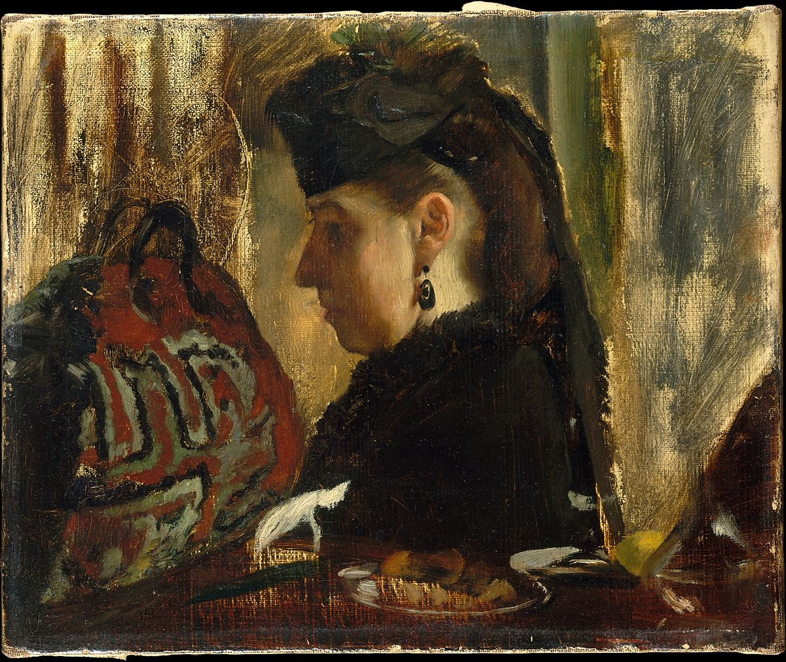

<head>
<meta charset="UTF-8" />
<meta name="keywords" content="drawing, painting" />
<meta name="description" content="drawings by Sunjy" />
<title>Sunjy</title>
<link rel="shortcut icon" type="image/x-icon" href="../../mImages/mCommon/favicon.ico" media="screen" />
<link rel="stylesheet" type="text/css" href="../../mCsses/mCommon/mCssA.css" />
<link rel="stylesheet" type="text/css" href="../../mCsses/mCommon/mCssB.css" />
<link rel="stylesheet" type="text/css" href="../../mCsses/mCommon/mCssC.css" />
<link rel="stylesheet" type="text/css" href="../../mCsses/mCommon/mCssD.css" />
<link rel="stylesheet" type="text/css" href="../../mCsses/mContent/mCssA.css" />
<link rel="stylesheet" type="text/css" href="../../mCsses/mContent/mCssB.css" />
<link rel="stylesheet" type="text/css" href="../../mCsses/mContent/mCssC.css" />
<link rel="stylesheet" type="text/css" href="../../mCsses/mContent/mCssD.css" />
</head>
<script type="text/javascript" src="../../mScripts/mContent/mContentAA.js" /></script>
<script type="text/javascript" src="../../mScripts/mContent/mContentAB.js" /></script>
<script type="text/javascript" src="../../mScripts/mContent/mContentAC.js" /></script>
<script type="text/javascript" src="../../mScripts/mContent/mContentAD.js" /></script>
<script type="text/javascript"></script> 
<script type="text/javascript">
document.write('<div class="mImgAbsolute"></div>');
/*
document.write('<p class="mFontSizeBColor" />From a white paper...</p>');
document.write('<table class="center"><tr><td>');
document.write('');
document.write('</td></tr></table>');
*/
</script>


<script type="text/javascript">
document.write('<p class="mFontSizeBColor" />Marie Dihau</p>');
document.write('<p class="mFontSizeSColor" />By Edgar Degas, 1867–68. Marie Dihau was a successful pianist and singer who lived in Lille but often came to Paris to perform. She recalled that Degas executed this portrait quickly at a restaurant. Shown in sharp profile, wedged between the remnants of a finished meal and a carpetbag, the sitter—a traveling musician whom Degas typically caught on the run—effectively makes a cameo appearance in this compelling character study.　 <br><br>Her brother Désiré, a bassoonist for the Paris Opéra, is the second figure from the left in Degas’s The Ballet from Robert le Diable.</p>');
document.write('<table class="center" /><tr><td>');
document.write('<br>Her brother Désiré, a bassoonist for the Paris Opéra, is the second figure from the left in Degas’s The Ballet from Robert le Diable." />');
document.write('</td></tr></table>');
</script>


